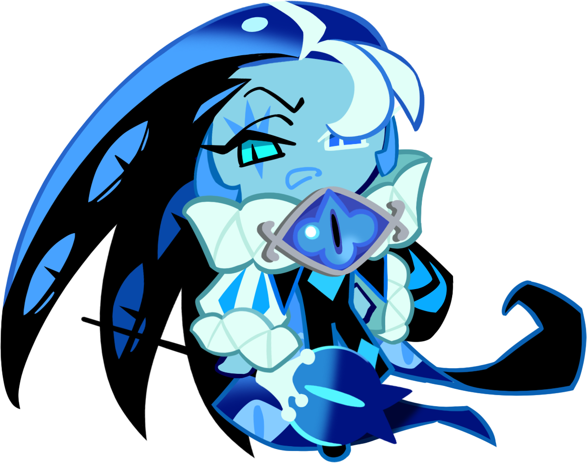

La Leche sombría es una figura muy poderosa dentro del universo de Cookie Run: Kingdom. Es una galleta perteneciente a la categoría "bestia". Actualmente pertenece al meta del juego.
Galleta de tipo magia, equipar con tartaleta de ataque, cinco aderezzos de ataque (a poder ser de los usyos propios) y beascuit full ignorancia al daño o full recarga.
Volver al inicio